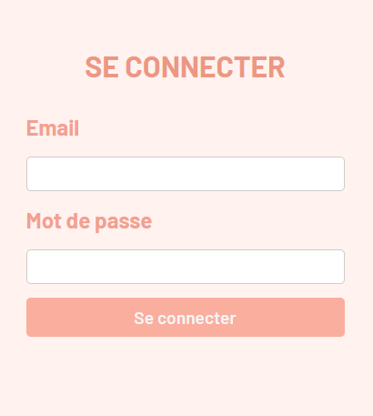
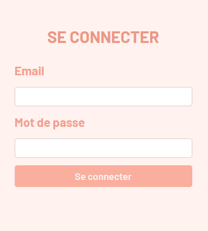
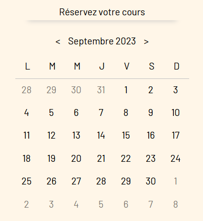

Douceur de lune

Pourquoi ce projet ?
Technologies et langages utilisées


Architecture de l'Application

- Contrôleur (Controller)
- Modèle (Model)
- Vue (View)
Fonctionnalités Clés
Un système d'inscription et de connexion
 

Fonctionnalités Clés
La possibilité de supprimer ou modifier son profil
- modification/supression dans le profil
Fonctionnalités Clés
Un calendrier de réservation
- Section Mois/Jours
 Section Horaires
Section Horaires Section Réservation
Section Réservation
Fonctionnalités Clés
La possibilité de payer via Stripe
 Méthode de payment via Stripe
Méthode de payment via Stripe
Fonctionnalités Clés
Une interface admin
Interface administrateur via EasyAdmin
Démo
Maintenant que je vous ai présenté le projet en détail, voici une démonstration de son utilisation en situation réel.
Challenges et Solutions
Calendrier imaginé en FullCalendar et transformé en full JavaScript
Améliorations Futures
Parler des améliorations ou des fonctionnalités que je prévoie d'ajouter.
- Court terme : Paypal ? Captcha ?
- Moyen terme : Messagerie ?
- Long terme : Petite boutique en ligne
Conclusion
Résumer des points clés de la présentation + remerciements